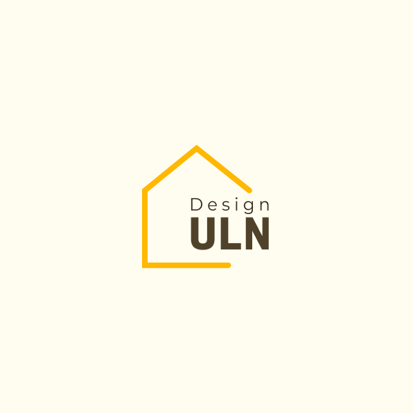

About ULN
Normal의 범위 안에서
Upper Limit를 만듭니다
생활 동선, 채광, 수납, 유지관리까지 고려해 보이는 아름다움과 실제 사용성을 동시에 설계합니다. 상담 단계에서 예산과 우선순위를 먼저 정리하고, 필요한 공정만 정확하게 제안합니다.

DESIGN ULNSeoul Interior Studio
주거 인테리어를 중심으로, 일상에 오래 남는 질감과 균형을 설계합니다. 과장된 장식보다 정돈된 디테일과 소재의 밀도를 우선합니다.
프로젝트 보기About ULN
ULN은 Normal 안에서 Upper Limit를 만든다는 철학의 약자입니다. 우리는 공간의 기본 예산을 존중합니다. 하지만 그 안에서 얻을 수 있는 최대한의 완성도를 추구합니다.
우리는 공간을 화려하게 덧칠하기보다, 오래 사용할수록 가치가 남는 균형을 설계합니다. 도면 단계의 의도와 현장 마감의 디테일이 어긋나지 않도록 전 공정을 같은 기준으로 관리합니다.
About ULN
생활 동선, 채광, 수납, 유지관리까지 고려해 보이는 아름다움과 실제 사용성을 동시에 설계합니다. 상담 단계에서 예산과 우선순위를 먼저 정리하고, 필요한 공정만 정확하게 제안합니다.
Selected Work
How We Work
현장 조건과 예산, 일정, 생활 패턴을 기준으로 범위를 설정합니다.
동선과 수납을 중심으로 평면, 재료, 조명 계획을 정리합니다.
공정별 체크리스트로 품질을 관리하고 투명하게 공유합니다.
Project Inquiry
공사 희망 시기, 대략적인 평수, 참고 이미지를 함께 보내주시면 1차 상담에서 가능 범위와 우선순위를 빠르게 안내드립니다.